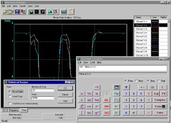

Zoom (47K)
Zoom (47K)
VERIBEST ANALOG INDIVIDUAL |
To prove system concepts and architectures early in the design cycle, design definition and verification can start at a high level of abstraction using the inclusive behavioral analog HDL language DIABLO, along with a library of generic and parameterizable functional blocks. This allows problems to be discovered before significant effort has been expended at the circuit design level, improving designer efficiency and shortening design cycle times by removing circuit iterations. Final circuit approval can then be verified down to the IC transistor level, if required.
With the emergence of analog FPGAs, and predicted continuous growth of mixed analog/digital ASICs, the ability to verify application specific devices prior to committing to silicon is becoming increasingly important. The VeriBest Analog Simulation Engine (VBASE) supports native mixed analog/digital simulation for predominantly analog circuits with SSI/MSI digital sections, together with the extended parameters necessary for ASIC modeling.
With greater emphasis on reducing manufacturing and scrap costs, designs need to be properly toleranced, insuring that components of adequate range are used in designs, and also insuring that designs will function properly across several manufacturing builds.
Analyses such as sensitivity, statistical Monte Carlo and Worst Case enable
you to identify components that have the most effect on circuit performance,
identify the likely yield of a design considering tolerance variations across
components, and balance costs of tightly toleranced components versus the
impact on circuit and manufacturing performance. Reports can then be exported
to an ASCII file utilizing comma-separated-value format.
Zoom (47K)
VERIBEST ANALOG INDIVIDUAL continues the VERIBEST philosophy of providing a flexible environment to drive simulation. Tight integration with VERIBEST SCHEMATIC CAPTURE allows the user to provide much of the information needed for simulation via point-and-click from the schematic, streamlining the simulation process.
By maintaining SPICE standards, we allow you to import models and netlists from other design capture sources as well, effectively expanding your simulation environment. A PSpice-to-VeriBest translator is also provided.
Through vendor models supplied freely over the worldwide web, and the 6000 plus models delivered with VBA, users have access to over 15,000 models! Our integrated Model Library Manager utility allows for management of your libraries and the viewing and editing of your models in those libraries, no matter the source.
Through the DIABLO analog behavioral language, libraries are provided in such specialized areas as automotive devices, and switch-mode power supply devices.
Zoom (29K)
VERIBEST ANALOG INDIVIDUAL provides your users with the ability to analyze and output simulation data that is most useful to your design process.
Analog Waveform Display allows flexible viewing of single or multiple waveforms, including multi-graphing options such as Logic Analyzer mode. Label and add text to any graph for documentation, or plotting.
Through Waveform Calculator waveforms can be mathematically manipulated to predict circuit performance and future designs. And any waveform can be exported to a number of outside tools through comma-separated-value data format.
| VBA Individual | |
|---|---|
| Licensing: | |
| standalone/nodelocked | YES |
| network/floating | NO |
| General: | |
| Includes schematic capture | YES |
| Graphical design entry (schematic capture) | YES |
| support of hierarchical design | YES |
| parameter passing through hierarchy | YES |
| Simulation setup using dialogs | YES |
| Cross-probing | YES |
| Override symbol property from simulation environment | YES |
| Library configuration | YES |
| Model editor | YES |
| Analog Behavioral Modeling | YES |
| Graphical waveform display | |
| X/Y axes user configurable | YES |
| configurable curve/trace colors and line style | YES |
| pan and zoom | YES |
| labels | YES |
| creation and display of derived waveforms (waveform calculation) | YES |
| export to ASCII YES | |
| Single-window analysis of multiple data sets | YES |
| horizontal multiple Y axes | YES |
| vertical multiple Y axes (logic analyzer style display) | YES |
| multiple markers | YES |
| copy to clipboard | YES |
| save configuration | YES |
| load configuration | YES |
| Analyses Supported | |
| DC, AC, Transient, and Temperature | YES |
| Parametric Sweep, Sensitivity, Noise, Distortion | YES |
| Fourier Analysis | YES |
| Statistical Analysis: Monte Carlo, Worst Case | YES |
| Primitives and models supported in simulator | |
| BJTs | YES |
| Coupled inductors | YES |
| Dependent Sources | |
| SPICE2 nonlinear specification | YES |
| SPICE3 nonlinear specification (B element) | YES |
| Digital primitives | |
| gates | YES |
| flip-flops | YES |
| Diodes | YES |
| MESFETs: | |
| Cubic | YES |
| Quadratic | YES |
| Raytheon | YES |
| JFETs | YES |
| MOSFETs: | |
| SPICE3 MOSFET level 1 (Schichman-Hodges) | YES |
| SPICE3 MOSFET level 2 (Grove-Frohman analytical) | YES |
| SPICE3 MOSFET level 3 (MOS3 empirical) | YES |
| BSIM1 | YES |
| BSIM2 | YES |
| ASPEC | YES |
| MOS8 | YES |
| CSIM, short channel | YES |
| Nonlinear magnetics | YES |
| Passives (both ideal primitives and .MODEL) | YES |
| Switches | |
| current | YES |
| voltage | YES |
| Transmission lines | |
| Ideal | YES |
| Libraries | |
| Analog Model Library | 5275+ |
| Digital Model Library | 825+ |
| Miscellaneous specifications: | |
| Maximum number of devices | 1000 |
| Maximum number of nodes | 500 |
| Corporate Headquarters Boulder, Colorado 1.888.482.3322 email: sales@veribest.com http://www.veribest.com |
United Kingdom (44)1793.551.199
Germany (49) 89.96284.0 France (33) 1.41.76.35.00 Nordic (46) 8.92.54.00 Asia/Pacific (852) 2.893.3621 Japan (81) 3.5979.6331 |
|---|
{kind=link}